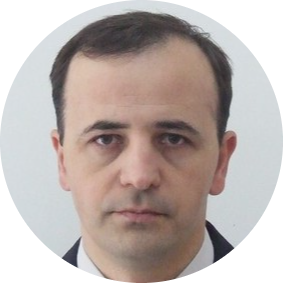

|  |
Seceleanu SergiuDirector Tehnic la Cocktail Service SRL |
| Data | Nivel studiu | Denumire specializare | Institutia |
|---|---|---|---|
| 1983-1987 | Studii liceale | Electrotehnica | Liceul de Chimie Industriala din Piatra Neamt |
| 1996-1999 | Studii postliceale | Maistri centrale, retele si statii electrice | Liceul de Chimie Industriala din Piatra Neamt |
| 2005-2010 | Studii de licenta | Informatica | Universitatea Titu Maiorescu din Bucuresti |
| 2013 | Studii specializare | Inginer sisteme de securitate | SECTRA SRL din Cluj-Napoca |
| 2013 | Studii specializare | Proiectant sisteme de securitate | SECTRA SRL din Cluj-Napoca |
| 2015 | Studii specializare | Tehnician pentru sisteme de detectie, supraveghere video si control acces | SECTRA SRL din Cluj-Napoca |
| 2019 | Studii specializare | Operator in verificarea, intretinerea si reparararea instalatiilor speciale de prevenire si stingere a incendiilor | EURO-MAR Security din Bacau |
| 2020 | Studii specializare | Ofiter GDPR | Centrul de formare APSAP din Bucuresti |
| Data | Functia | Societatea |
|---|---|---|
| 1990-1998 | Electrician intretinere si reparatii | Melana SA din Savinesti |
| 1998-1999 | Tehnician instalator CATV | Telemach Grup SRL din Piatra Neamt |
| 1999-2001 | Tehnician service CATV | Telemach SRL din Piatra Neamt |
| 2001-2012 | Director Tehnic | Telemach SRL din Piatra Neamt |
| 2012-2013 | Coordonator Tehnic | RCS & RDS SA Filiala Piatra Neamt |
| 2013-prezent | Director Tehnic | Cocktail Service SRL din Piatra Neamt |
| Data | Denumire proiect | Societatea |
|---|---|---|
| 2004 | Implementare sistem de criptare pachete de programe TV | Telemach SRL din Piatra Neamt |
| 2006-2008 | Implementare servicii de acces la Internet | Telemach SRL din Piatra Neamt |
| 2008-2012 | Implementare servicii de acces la Internet si Telefonie fixa a RCS & RDS SA in reteaua HFC a Telemach SRL | Telemach SRL din Piatra Neamt |
| 2012 | Proiectare si coordonare echipe constructie retea fibra optica GPON FTTB in Mun. Piatra Neamt zonele de blocuri | RCS & RDS SA Filiala Piatra Neamt |
| 2013 | Proiectare si coordonare echipe constructie retea fibra optica GPON FTTH in Mun. Piatra Neamt zonele de case | RCS & RDS SA Filiala Piatra Neamt |
| 2013 | Proiectare si coordonare echipe constructie retea hibrida fibra optica / coaxial EOC in Garcina, Cuejdiu, Bistrita si Savinesti | RCS & RDS SA Filiala Piatra Neamt |
| Proiectare: | |
|---|---|
| - retele hibride de fibra optica si coaxial | ⭐⭐⭐⭐⭐ |
| - sisteme de securitate | ⭐⭐⭐⭐⭐ |
| - instalatii de detectie, semnalizare si alarmare la incendiu | ⭐⭐⭐⭐ |
| Instalare si mentenanta: | |
| - retele de televiziune prin cablu hibride fibra optica/coaxial | ⭐⭐⭐⭐⭐ |
| - jonctiuni fibra optica | ⭐⭐⭐⭐ |
| - sisteme de securitate | ⭐⭐⭐⭐ |
| - instalatii de detectie, semnalizare si alarmare la incendiu | ⭐⭐⭐⭐ |
| - instalatii de desfumare cu trape de fum | ⭐⭐⭐ |
| - sisteme de automatizari porti si usi de garaj | ⭐⭐⭐ |
| - sisteme de interfonie si videointerfonie | ⭐⭐⭐⭐⭐ |
| - instalatii fotovoltaice on-grid, off-grid | ⭐⭐⭐⭐ | - instalatii impamantare | ⭐⭐⭐ | - instalatii electrice rezidentiale | ⭐⭐⭐ |